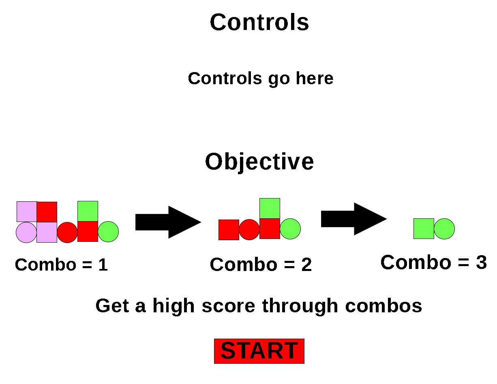

Pustrive is a single player focused adaptation of Super Puzzle Fighter II Turbo. Instead of having PvP, the game will focus on gathering a high score through creating combos.
Puzzle
Desktop web
Abstract
A simple 8 bit style would be ideal for this game.
The gameplay loop involves placing Foundation blocks (4 colors) and using Activator blocks (also four colors) to start a combo. Once the blocks are activated, they clear and the player gains points. If the player manages to clear multiple sets of Foundation blocks sequentially, triggered by one Activator block, it forms a combo and the player gets points.

Tutorials referenced include W3Schools' pages on selectors, text align, semantic markup, and Flexbox.
Other materials referenced included LogRocket's local storage tutorial and this version of JavaScript Tetris for some inspiration for solutions implemented into my project. This project was made with the help of ChatGPT to comment my functions toward the end of the project to make their purpose more clear.
I was unable to make the full game I laid out in the original pitch, but the version I created is still fun and somewhat close to my original idea. I really like how the small tricks such as replacing pieces and sticking to the walls can help you set up scoring opprotunities as well as add more strategy to the game. I was also unable to add sound, which is something I would add in a more fleshed out release.
I was able to make a fun, more unique game than my original proposal (which would have been very similar to Super Puzzle Fighter II Turbo). I was also able to incorporate a simple score saving mechanic - the game will save your top score for you to beat next time you play.
Hello! I am a second year Game Design and Development major at RIT. I like writing poetry and reading. My skill set includes C#, HTML/CSS, JavaScript, and PixiJS.